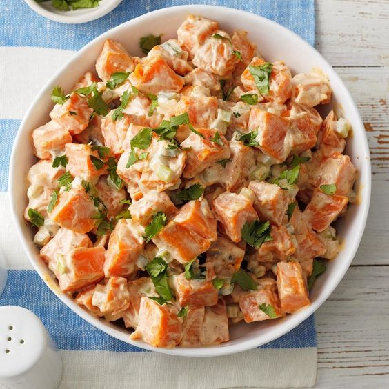

Prep Time:
5 mins
Cook Time:
35 mins
Additional Time:
N/A
Total Time:
40 mins
Servings:
6
Ingredients
-
4 medium sweet potatoes, peeled and chopped (2 lb before peeling)
-
1 onion, diced
-
1/2 tsp salt, and optional pepper
-
3 tbsp oil, or spray (for fat-free option)
-
2 tsp minced garlic
-
2 tbsp lime juice
-
1 red bell pepper, diced
-
1 can black beans, or 1 1/2 cups cooked
-
optional 1 cup canned or cooked corn
-
3/4 cup fresh cilantro, chopped (omit if desired)
Directions
-
Step 1
Toss sweet potatoes and onions with 1 1/2 tbsp oil (or spray) and the garlic, sprinkle with salt and optional pepper, and arrange in a single layer on two parchment-lined baking sheets.
-
Step 2
Place in a non-preheated oven on the center rack, then turn the oven to 450 F.
-
Step 3
Place in a non-preheated oven on the center rack, then turn the oven to 450 F.
-
Step 4
Add all remaining ingredients to a large bowl, then toss with the sweet potatoes. Serve hot or cold.